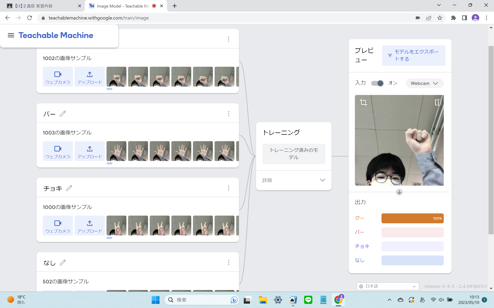
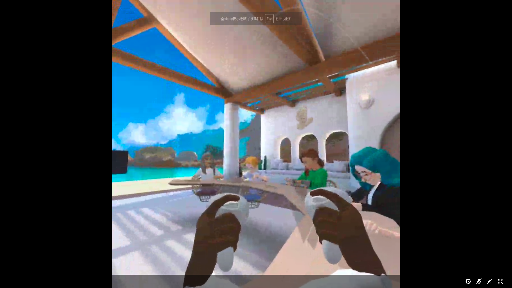

第2週目
2-1 １週目のレポートをHTMLで作る
１週目のレポート
1.内容
Githubのコードのところからレポート1を選び、編集をした。まず最初に「yourID」と書かれたところに自分のIDを書き直した。その後内容、感想を書き、「commit changes」を押し、編集を完了した。
2.感想
書き換えるときに、間違えて消してしまったりしないか緊張した。また、うまくホームページを作成できた時はうれしかった。
2-2 機械学習体験

1.内容
機械学習体験では、「teachablemachine」というサイトを使って行った。題材はじゃんけんの手の形を判別できるようにするものだった。まず最初にグー、チョキ、パーそれぞれの写真を数百枚撮った。
次にそれぞれの画像をAIに学習させて、判別できるようにした。また、追加で何もしていないときも学習させて、四通りの認識をさせるようにした。
2.感想
きちんと指の形を見て判断しているところがすごいと思った。また、学習させる枚数を多くすればするほど正確に判断できるようになっていたのが興味深かった。
2-3 VR（バーチャルリアリティー：Virtual Reality）会議室の体験

1.内容
VRゴーグルを装着して設定を行い、もう一つのパソコンと画面を共有できるようにした。その後、Workroomsに移動して、自分のアバター周りの設定をし、会議室に入った。
2.感想
VRが思っている何倍も高画質できれいだった。また、ライトセーバーのようなポインターで黒板に文字を書くのも楽しかった。右リモコンを地面に置くことでバーチャル内の地面を現実と同じ傾きにする技術がとても興味深かった。